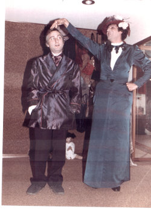

Una gradevole occasione di incontro col teatro, in una città come Catanzaro, sonnolenta ed impigrita dalla sempre più grave mancanza di occasioni e di stimoli culturali, quella proposta dalla Società Artistica Calabrese, con la rappresentazione, replicata per tre serate, di quattro atti unici tratti dalla "Pace domestica" di Georges Courteline. Con la regia di Lillo Zingaropoli, notevole è stata l'interpretazione del lavoro da parte di Carlo Greco e di Aldo Conforto. Un'occasione salutata dall'interesse di un pubblico numeroso che ha applaudito con consapevolezza ed entusiasmo questa nuova prova della cooperativa degli attori catanzaresi che, spinti unicamente da un autentico amore per il teatro, da anni, con coraggio, tra difficoltà di ogni genere, portano avanti un discorso culturale di grande impegno. (E chi svolge attività artistiche o letterarie in provincia, sa, quali e quanti siano gli ostacoli di varia natura da affrontare). I quattro "quadri di Courteline, che la compagnia replicherà entro e fuori i confini della regione, propongono in chiave satirica il difficile rapporto della coppia e svolgono un tema, quanto mai profondo ed attuale, in tono volutamente disinvolto e divertente. Pregio dell'opera di Courteline e della sua realizzazione scenica, è quello di avere messo in evidenza, con un ottica decisamente moderna, quel pianeta-donna così variegato e controverso, abitualmente assunto, in letteratura ed in teatro, quale "satellite" entro ben precise e schematizzate orbite maschili. La donna è, nel lavoro dei nostri, assunta quale decisa ed agguerrita "controparte" dell'uomo, ed è osservata, scandagliata, vivisezionata in quelle che sono le sue possibilità di contrapposizione al vecchio predominio maschile, contro il quale ella sa sfoderare (ed il lavoro è ambientato in tempi ben lontani dal sospetto di femminismo) tutte le sue armi in grado di imporre al compagno-rivale una indiscutibile supremazia psicologica che sfocia nella prevaricazione e nel dominio. Tale immagine della donna è imposta in chiave umoristico-paradossale, tanto che le varie interpretazioni di donna-virago, per meglio definirne le impronte e le pieghe sono affidate nel lavoro, ad un attore, all'ottimo Carlo Greco che realizza personaggi emblematici assai gustosi e caratterizzati. Quattro unioni difficili, nelle quali, pare sia la donna a dominare contro un interlocutore mediocre e facilmente soggiogabile, grazie all'arroganza, alla seduzione, alla provocazione, all'enigmaticità, all'impostura. Pare, dicevo, sia la donna a prevalere perché certamente più forte, più decisa e più furba, ma non so, in tale "particolare" imporsi e determinarsi della figura femminile, quanto ci sia di effettiva "simpatia" per la donna da parte di Courteline-autore, e quanto, invece, proprio nella paradossalità delle situazioni, della donna, non siano alterate e misconosciute, le qualità più vere, quelle, in una parola, che la donna potrebbe evidenziare in un rapporto umano e coniugale più giusto ed equilibrato di quanto i tempi di Courteline, e i nostri tempi , non le impongono.
Due i termini della "coppia", due i personaggi. Personaggi in bilico tra il reale ed il grottesco, tra il normale e l'assurdo, sul filo di vicende amabilmente e paradossalmente "impossibili", cui solo l'arma sottile dell' ironiale ( o forse è più esatto parlare di sarcasmo) poteva definirne il taglio e sostenere il peso. Un'ironia che è, però, disincanto ed amarezza nella consapevolezza di "irrealtà impossibili" o di "impossibili verità" esistenti o sempre esistite nel solco delle inimicizie, delle frustazioni, delle rivalità, tra i componenti di quel difficile binomio che è il matrimonio. Disincanto ed amarezza mistificati, appunto, nel giro allusivo ed elusivo del grottesco e del paradossale. E niente, come l'umorismo, può rendere a volte, la drammaticità di certe guerre in cui non c'è un vincitore o un perdente, ma si è inesorabilmente sempre vinti. Niente, più del "divertito", o, meglio, dell' "amaramente divertito", può dire la "pena grottesca", di essere compagni-nemici, così come calcare le tinte e i toni della "guerra" può significare metterne in evidenza i risvolti umani più sottili e più veri. Tutto ciò che, nella tematica di Courteline è acutamente avvertibile, resta prodigiosamente e dolorosamente attuale e vero ieri, come oggi. Ma perché l'umorismo attraversi il dramma dell'uomo, le sue debolezze, le sue fragilità, i suoi errori, le sue anomalie, ed in certo senso contribuisca, se non a risolverlo tale dramma, almeno a mitigarlo, proprio demistigandolo e sdrammatizzandolo, è necessario che esso umorismo sia sapiente e sottile, tracci linee e vicende e personaggi ed eventi con mano critica ed intelligente. Due soli attori, nel lavoro di Courteline, per otto personaggi diversi, pur se legati da un unico discorso sulla crisi della coppia. Attori a cui va un particolare plauso (ed il pubblico ha accentuato calorosamente il suo consenso per una recitazione spigliata, personale, sicura. Aldo Conforto, sottile, elegante, puntuale, è l'interprete. dei «mariti» (il pavido, il rassegnato, il debole, l'ingenuo), mentre Carlo Greco è il funambolico trasformista e realizzatore delle varie figure femminili, diverse nella loro componente psicologica (l'aggressiva, l'arrogante, la subdola, l'ipocrita). Un trasformismo che richiedeva doti e personalità notevoli di attori, oltre a capacità istintiva a calarsi rapidamente ed interamente in panni diversi per "vivere" i personaggi. Impeccabili i costumi d'epoca. Semplice ed efficace la scenografia. Suggestive ed adatte al clima le musiche. Ne è scaturito uno spettacolo fresco, vivo, frizzante, che ha divertito il pubblico secondo i canoni essenziali dell' "ars comica", ma che, successivamente, ha indotto lo spettatore a riflettere su quello che è il più comune ed il più scontroso dei rapporti a due. Ed è da notare che non era facile, trattando un tema del genere, non cadere nella rete di un umorismo ovvio o di una retorica scontata. Il merito maggiore del regista e degli attori è proprio quello di avere caratterizzato i personaggi in chiave comica ma senza eccessi, puntualizzando, anzi ironizzando, sulle loro "anomalie", sulle loro "difformità", ma rivestendoli di quella carica di umanità sempre necessaria e di quella «credibilità» ed «attualità» capaci di farli realmente vivere, per un'ora, sulle tavole di un palcoscenico. E questo è forse il senso più autentico di fare teatro.
{kind=link}
Si ringraziano Giusi Verbano Cipollina e la redazione di Oggi Sud